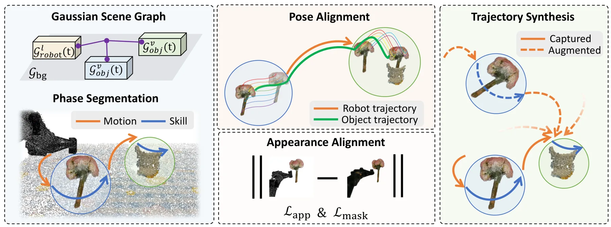
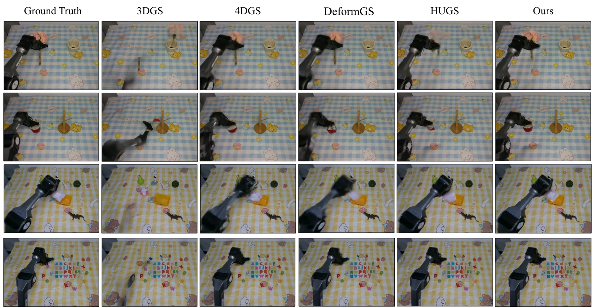
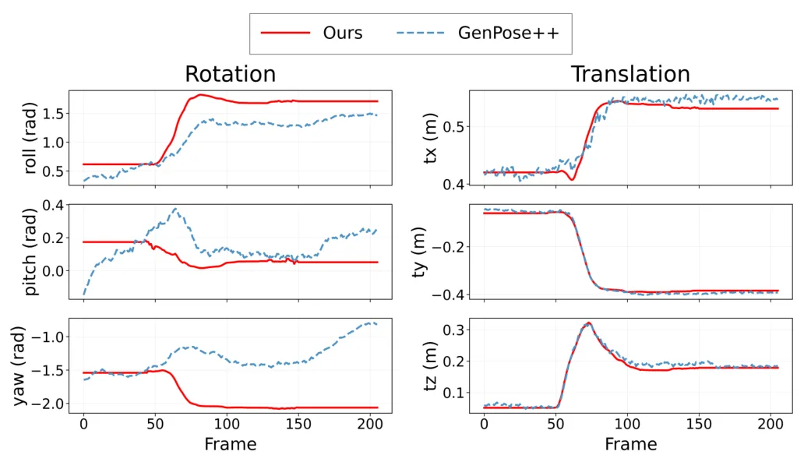
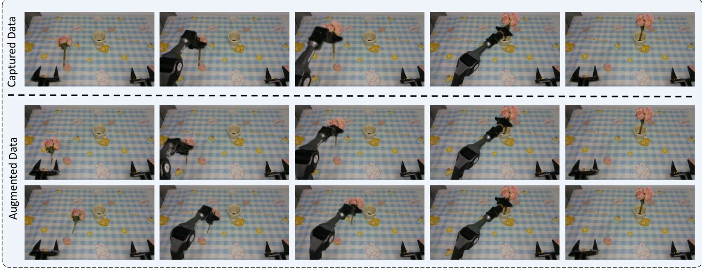
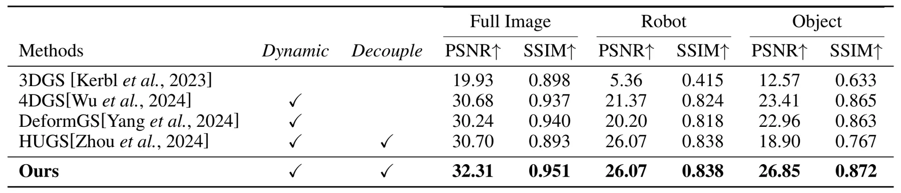
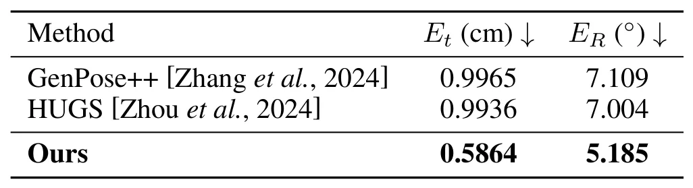
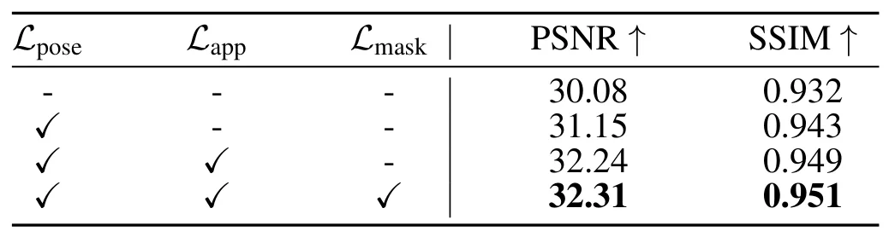

ManiSplat：通过解耦 3DGS 从单目视频合成机器人操作轨迹ManiSplat: Manipulation Trajectory Synthesis from Monocular Video via Decoupled 3D Gaussian Splatting
与机器人交互场景重建、动态物体解耦和仿真数据生成相关；对经典 SLAM 的价值主要在动态地图表达。
一句话工作总结
ManiSplat 将机器人、物体和背景解耦为 Gaussian 子场，用单目操作视频重建可控动态数字孪生。
摘要
从真实观测重建动态交互三维场景是计算机视觉和机器人中的基础挑战。静态 3DGS 已能实现高质量重建，但扩展到含机械臂和可操作物体的交互环境时，会受到复杂接触和突发位姿变化影响。ManiSplat 从单目 ego-view 机器人视频中重建可控、解耦的 Gaussian digital twins。方法提出 Graph-Structured Disentangled Representation，把机器人、物体和背景分离为在场景图中组织的独立 Gaussian subfields；Task-Oriented Spatio-Temporal Alignment 利用操作任务中 Motion/Skill 阶段交替的逻辑来构造更准确的伪真值轨迹；再通过联合 photometric-geometric optimization 保持时间一致、物理一致和仿真可用。
Reconstructing dynamic and interactive 3D scenes from real-world observations remains a fundamental challenge in computer vision and robotics. While recent advances in 3D Gaussian Splatting have enabled high-fidelity static reconstruction, extending it to interactive environments with articulated robots and manipulable objects remains difficult due to complex contact interactions and abrupt pose changes. To address these challenges, we introduce ManiSplat, a unified framework that reconstructs controllable and decoupled Gaussian digital twins directly from monocular ego-view robotic videos. Our method introduces a Graph-Structured Disentangled Representation that separates the robot, objects, and background into independently optimizable Gaussian subfields organized within a scene graph. To ensure stability, we propose a Task-Oriented Spatio-Temporal Alignment module that leverages the inherent logic of manipulation tasks-alternating between Motion and Skill phases-to construct accurate pseudo-ground-truth trajectories. Finally, a joint photometric-geometric optimization ensures the reconstructed scenes are temporally coherent, physically consistent, and simulation-ready. Extensive experiments demonstrate that our approach reconstructs interaction-driven dynamic scenes with high fidelity and controllability, effectively supporting downstream robotic tasks and policy learning.
中文解读摘录
- 作者：Ray Zhang, Marcus Greiff, Thomas Lew, John Subosits；类别：cs.CV / cs.AI / cs.RO；发布日期：2026-06-09；备注：16 pages, 12 figures；采集 score=14
- 核心问题：局部点云配准在 LiDAR/RGB-D tracking 中通常依赖 correspondences 或 ICP 类最近邻，特征稀疏、退化或外观变化时容易漂移；RKHS/CVO 类 correspondence-free 方法更稳但一阶优化速度偏慢。
- 方法亮点：把点云表示为带 point-wise anisotropic kernels 的连续函数，核函数编码局部几何，使法向方向更强约束、切向方向更宽松；优化上提出带近似 Riemannian Hessian 的二阶流形优化。
- 结果信号：相对以往一阶 RKHS 配准 solver 最高加速约 10×；在驾驶域 LiDAR tracking 的特征稀疏场景中，平移和旋转漂移均降低超过 55%；RGB-D 与物体配准 benchmark 也显示比 ICP 类方法更稳。
- 关注价值：这是今天最接近 SLAM 前端/里程计的工作。若开源或实现成本可控，值得尝试替换/增强 frame-to-frame LiDAR odometry、RGB-D odometry 和全局初始化后的精配准模块。
图表/页面预览

{kind=link}

{kind=link}

{kind=link}

{kind=link}

{kind=link}

{kind=link}

{kind=link}
